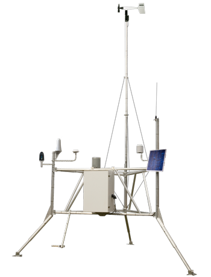

wx network tools
latency
alerts
trace
moisture
more
▼
🎲
wx scatter
🛒
downloader
📷
station photos

wx network tools
fire weather station monitoring
📡
data latency
Live data latency status by fire centre.
🌦️
alerts dashboard
Automated diagnostics across RH, wind, temp, precip, and power by fire centre.
📈
predicate trace
Query historical hourly data with custom conditions across stations and years.
🌱
CFFDRS moisture
CFFDRS moisture content conversions, field comparison tools, and soil moisture analysis.
🎲
wx scatter
3D variable relationships across attributes.
🛒
datamart downloader
Download historical observations from BC Wildfire Datamart.
📷
station photos
Browse maintenance visit photos by station.